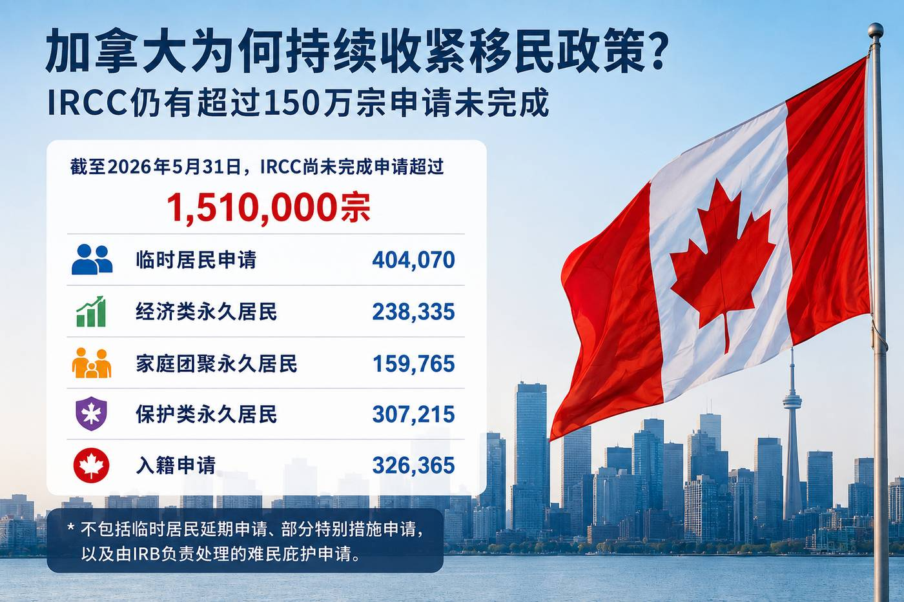

加拿大为何持续收紧移民政策？ IRCC仍有超过150万宗申请未完成
Read in English
过去一年，不少关注加拿大移民的人都有同样的感受：
- 学习许可审批越来越严格；
- 工作许可政策不断调整；
- 访客签证审查趋严；
- 父母团聚项目迟迟没有重启。
很多人会问： 加拿大是不是已经不欢迎移民了？
如果只看单一政策，很难找到答案。 但把IRCC最新公布的数据放在一起， 就会发现一个容易被忽略的背景： 整个移民系统仍然承受着庞大的申请压力。
根据加拿大移民、难民及公民部 （Immigration, Refugees and Citizenship Canada，IRCC） 最新统计，截至2026年5月31日， 仅公开统计的尚未完成申请就超过151万宗。
| 类别 | 尚未完成申请 |
|---|---|
| 临时居民申请 | 404,070 |
| 经济类永久居民 | 238,335 |
| 家庭团聚永久居民 | 159,765 |
| 保护类永久居民 | 307,215 |
| 入籍申请 | 326,365 |
值得注意的是，这些数据还不包括临时居民延期申请、 部分特别措施申请，以及由加拿大移民及难民委员会 （Immigration and Refugee Board of Canada，IRB） 负责处理的难民庇护申请。
积压并不等于“移民局处理太慢”
很多人看到申请库存， 第一反应是IRCC处理速度太慢。
但IRCC这次公布的数据透露出另一个重要信息： 部分申请并不是没有开始处理， 而是在等待年度移民名额。
例如，截至2026年5月底：
- 经济类永久居民申请中， 约25%正在等待名额；
- 家庭团聚永久居民申请中， 约40%正在等待名额；
- 保护类永久居民申请中， 约46%正在等待名额。
这意味着， 即使申请已经符合要求， 也可能因为当年的移民计划没有足够配额， 而需要继续等待。
加拿大目前面对的， 不仅是审批速度的问题， 也是年度接收能力的问题。
换句话说， 一份申请可能已经经过审查， 甚至可能已经基本符合项目要求， 但如果当年度可供使用的移民名额有限， IRCC仍然可能无法立即完成审批。
为什么最近各种政策都在收紧？
如果把最近一年出台的政策放在一起， 就会发现它们有一个共同特点：
- 国际学生数量受到控制；
- 外国工人数量减少；
- 部分开放式工作许可资格收紧；
- 访客签证审查更加严格。
这些变化并不一定意味着 加拿大不再欢迎国际学生、 外国工人或新移民。
相反，它们更像是在申请进入系统之前， 先控制新增申请的数量， 让整个移民系统维持在可以管理的范围内。
对于政府来说， 当申请库存已经非常庞大时， 除了提高审批效率之外， 控制新的申请流入， 同样是管理整个系统的重要方式。
当现有申请数量已经超过系统的处理能力 和年度接收目标时， 收紧新的申请入口， 就会成为政府控制库存的重要政策工具。
对申请人意味着什么？
未来的加拿大移民申请， 可能会越来越强调申请质量， 而不仅仅是申请数量。
无论是学习许可、工作许可、 访客签证还是永久居民申请， 申请人都需要更清楚地证明：
- 为什么选择这个项目；
- 为什么申请符合自己的背景；
- 是否具备真实、合理的申请目的；
- 提交的材料能否完整支持整个申请逻辑。
在申请资源有限、 审查更加严格的环境下， 一份准备充分、逻辑一致的申请， 比过去任何时候都更加重要。
仅仅满足申请清单上的最低文件要求， 可能已经不足以消除签证官或移民官的疑问。
申请人需要让个人背景、 申请目的、财务能力、 工作和教育经历以及未来计划之间， 形成一个完整、一致且可信的整体。
下一篇：TRV与难民庇护制度的关系
下一篇文章， 我们将继续分析另一个正在影响 加拿大移民系统的重要因素： 难民庇护申请数量近年来发生了哪些变化？
这些变化又为何促使加拿大 不断调整边境和签证政策？
访客签证审查趋严， 可能不仅与单个申请人的条件有关， 也与加拿大如何管理整个难民庇护 和临时居民系统密切相关。
Why Is Canada Continuing to Tighten Immigration Policies?
More Than 1.5 Million Applications Are Still in Process
Over the past year, many people following Canadian immigration have noticed the same trend:
- Study permit applications are facing increased scrutiny.
- Work permit policies continue to evolve.
- Visitor visas have become more difficult to obtain.
- The Parents and Grandparents Program has yet to reopen.
Many people are asking the same question: Is Canada becoming less welcoming to immigrants?
Looking at individual policy changes alone does not provide the full picture.
However, when viewed alongside IRCC’s latest statistics, a broader trend begins to emerge: Canada’s immigration system is still managing an enormous volume of pending applications.
According to Immigration, Refugees and Citizenship Canada (IRCC), as of May 31, 2026, there were more than 1.5 million applications still awaiting processing.
| Category | Applications in Process |
|---|---|
| Temporary Residence | 404,070 |
| Economic Permanent Residence | 238,335 |
| Family Class Permanent Residence | 159,765 |
| Protection Permanent Residence | 307,215 |
| Citizenship | 326,365 |
These figures do not include temporary resident extension applications, certain special measures, or refugee claims awaiting decisions before the Immigration and Refugee Board of Canada.
A Large Inventory Does Not Simply Mean Slow Processing
When people hear that more than 1.5 million applications remain in process, many assume that IRCC is simply processing applications too slowly.
However, the latest IRCC data reveals another important factor.
Some applications are not waiting because officers have not reviewed them.
They are waiting because they cannot yet be finalized under Canada’s annual immigration levels plan.
For example, as of May 2026:
- Approximately 25% of Economic Class permanent residence applications were waiting for available admission spaces.
- Approximately 40% of Family Class applications were waiting for admission spaces.
- Approximately 46% of Protection Class permanent residence applications were also awaiting available spaces.
In other words, even when an application has met the program requirements, it may still need to wait until sufficient immigration spaces become available.
Canada’s current challenge is not only processing capacity, but also the number of newcomers the country plans to admit each year.
Why Are So Many Immigration Policies Becoming More Restrictive?
Looking at recent policy changes together reveals a common trend:
- International student intake has been reduced.
- The number of foreign workers is being managed more carefully.
- Eligibility for certain open work permits has been narrowed.
- Visitor visa applications are receiving greater scrutiny.
These changes do not necessarily mean that Canada no longer welcomes international students, foreign workers or new immigrants.
Rather, they suggest that the government is trying to better manage the number of new applications entering the system while existing inventories remain high.
When application volumes significantly exceed available processing resources and annual immigration targets, controlling new intake becomes another important policy tool alongside improving processing efficiency.
What Does This Mean for Applicants?
Going forward, Canadian immigration applications are likely to place even greater emphasis on quality rather than quantity.
Whether applying for a study permit, work permit, visitor visa or permanent residence, applicants should be prepared to clearly demonstrate:
- Why they are applying for the program;
- How the application fits their personal and professional background;
- That their purpose is genuine and reasonable; and
- That all supporting documents present a consistent and credible overall story.
As Canada’s immigration system becomes more selective and application reviews become more rigorous, a well-prepared application with clear and logical supporting evidence is likely to be more important than ever.
Next Article
In the next article, we will examine another important factor affecting Canada’s immigration system: how asylum claims have changed in recent years, and why those changes have influenced Canada’s border and visa policies.